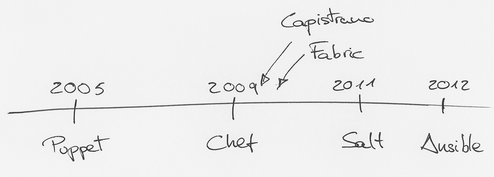

Ansible
DevOps simplificado
por
@jhvaras
soy
backend dev
ops manager
cto @ veiss
♥
web arch
automation
Dev != Ops => problemas
Dev + Ops
DevOps
Manejo de tareas & infraestructura

Gracias!
@jhvaras / jhvaras.com